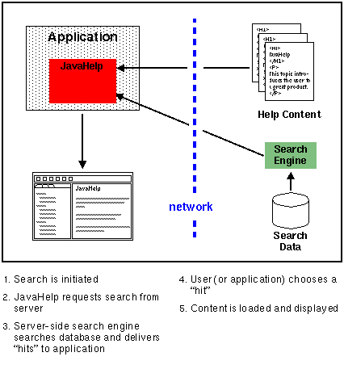

The JavaHelp system includes a full-text search facility that is fully-featured, compact, fast, and extremely flexible. The JavaHelp system is shipped with a search database indexer. Help authors use the search database indexer to create a compact database that is distributed with the application's help data. When a user initiates a search, the search engine searches the database to determine matches. Alternative search engines can be substituted for the standard JavaHelp system search engine.
The following scenarios illustrate some of the different ways that the full-text search can be used. Three scenarios are presented:
In a standalone search, all of the components (search engine, search database, and help topics) are local to the application.
From an implementation point-of-view, the client-side search is identical to the previously described standalone search except that the components are downloaded from a server. This arrangement is common with browser-based applications (applets), where the help data usually resides on the same server as the applet code. When a search is initiated, the search data is downloaded from the server, read into the browser's memory, and searched. The topic files are downloaded only when they are presented.

During the initial search, time is required to download the search database. Once downloaded, the data can be kept in memory or in a temporary file on the client machine and the searches are quite fast.
In a server-side search, the search data, topic files, and the search engine are all located on the server side - only the results of the search are downloaded to the client.

This option also works well for applets. It permits developers to use alternate search engines (for example, AlltheWeb, Google, or Lycos) and can be quicker to start because the search database is not downloaded. (It is especially fast if the search engine is already running on the server). Note that this approach works very well with Java servlets.
 Next Overview Topic:
JavaHelp System Lightweight Components
Next Overview Topic:
JavaHelp System Lightweight Components